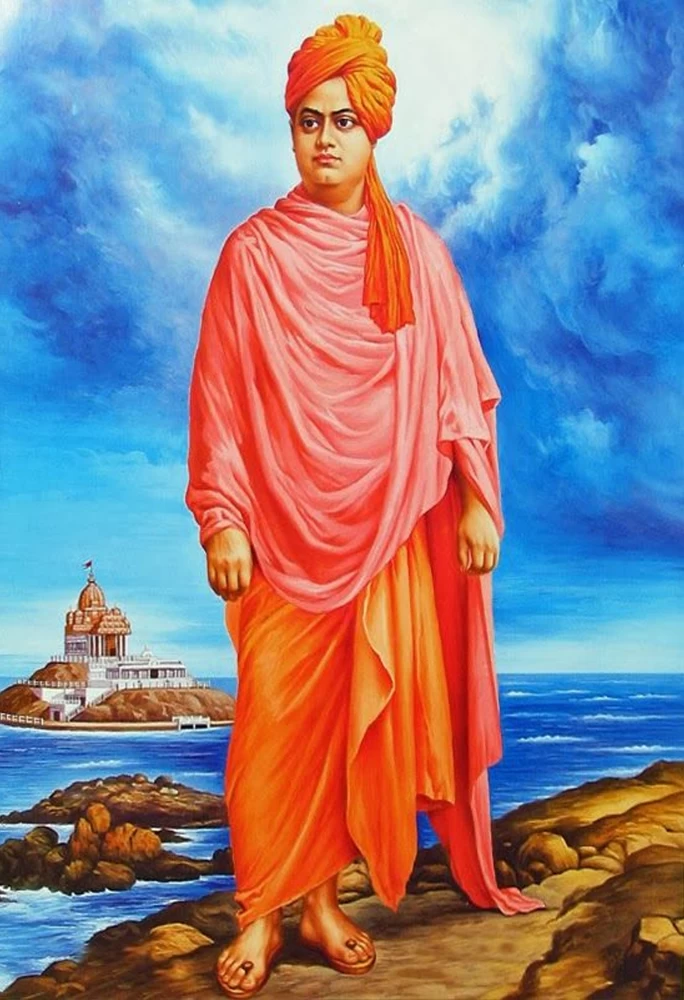

SWAMI VIVEKHANANDHA
1863 - 1902
Indian monastic and philosopher
Swami vivekhanandha Swami Vivekananda (/ˈswɑːmi ˌvɪveɪˈkɑːnəndə/; Bengali: [ʃami bibekanɔndo] ⓘ; IAST: Svāmī Vivekānanda ; 12 January 1863 – 4 July 1902), born Narendranath Datta (Bengali: [nɔrendronatʰ dɔto]), was an Indian Hindu monk, philosopher, author, religious teacher, and the chief disciple of the Indian mystic Ramakrishna.[4][5] He was a key figure in the introduction of Vedanta and Yoga to the Western world,[6][7][8] and the father of modern Indian nationalism who is credited with raising interfaith awareness and bringing Hinduism to the status of a major world religion.[9]
Quotes From Swami Vivekananda
- "You cannot believe in God until you believe in yourself."
- "Arise! Awake! And stop not until the goal is reached."
- "Talk to yourself once in a day, otherwise you may miss meeting an intelligent person in this world."
- “Anything that makes weak – physically, intellectually and spiritually, reject it as poison.”
- “All power is within you; you can do anything and everything. Believe in that, do not believe that you are weak; do not believe that you are half-crazy lunatics, as most of us do nowadays. You can do anything and everything, without even the guidance of anyone. Stand up and express the divinity within you.”
- “Take risks in your life, If you win, you can lead! If you lose, you can guide!?
- “Be not Afraid of anything. You will do Marvelous work. it is Fearlessness that brings Heaven even in a moment.”
- “In a conflict between the heart and the brain, follow your heart. ”